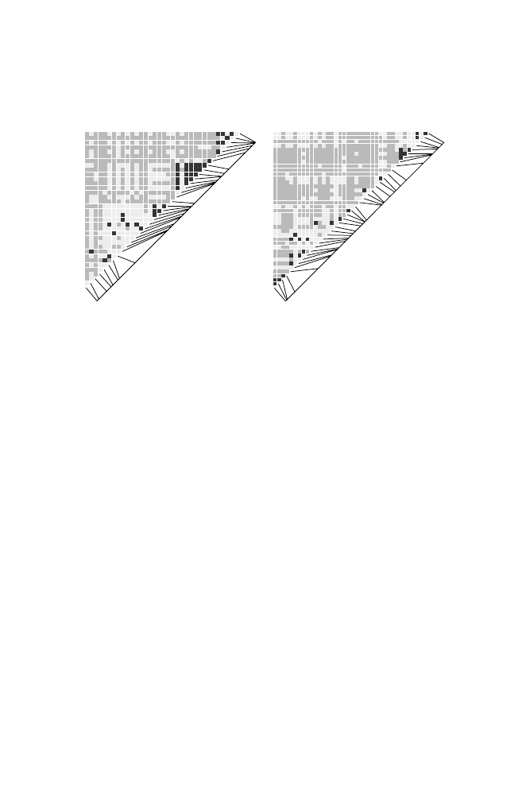

13.6 Linkage Disequilibrium in the Human Genome
391
294.8 kb
0.49 cM/Mb
450.8 kb
0.94 cM/Mb
Sub-Saharan African sample,
region 19a
A.
Sub-Saharan African sample,
region 32a
B.
Fig. 13.5.
Plots of pairwise
|
D
|
for two different human genomic regions drawn
from a sample of sub-Saharan African populations. Plotting is analogous to the
diagram in Computational Example 13.2. Dark grey squares indicate strong LD,
light grey represents intermediate LD, and medium grey indicates no LD. Markers
and marker spacings are indicated by lines below and to the right of the triangular
grids. Reprinted, with permission, from Wall JD and Pritchard JK (2003)
Nature
Reviews Genetics
4:587–597. Copyright 2003 JD Wall.
emphasizes the assertion that marker spacings that are too large will fail to
detect smaller blocks of disequilibrium, in effect sampling only the tail of the
LD block length distribution function.
The large number of SNPs allows estimation of recombination rate varia-
tion across the human genome. Although Innan et al. (2003) found that the
observed LD for chromosomes Hsa19 and Hsa21 could be modeled by us-
ing uniform but lower-than-average recombination rates, other experiments
indicated that recombination “hotspots” are present in the Class II region
of the major histocompatability complex (MHC) in humans (Jeffreys et al.,
2001; Kaupi et al., 2003). Substantial LD and apparent haplotype blocks were
noted based upon genetic data alone, and recombination events were detected
experimentally by assaying SNPs in DNA extracted from single sperm cells.
Five recombination hotspots were identified, each extending for 1–2 kb and
lying between the observed haplotype blocks. Whereas the average genomic
recombination rate is about 1.1 cM/Mb, the rates at these hotspots range
from about 3 cM/Mb up to 130 cM/Mb—100- to 1000-fold higher than rates
within the haplotype blocks themselves. A more comprehensive statistical
study employing SNP data for Hsa20 indicated that punctate recombination
(i.e., presence of hotspots and coldspots) is a general feature of the human
genome (McVean et al., 2004). This study found that half of all recombination
events occur within just 10% of the genome sequence and that the average